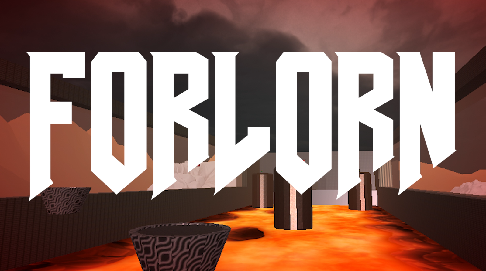
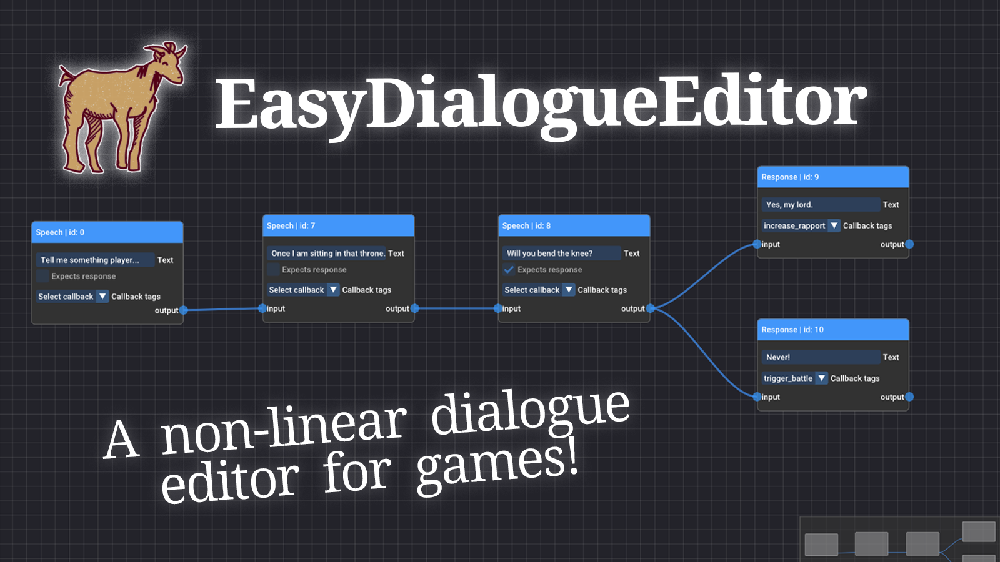

Game Projects

The Naturals' Descent (2024)
Action-Adventure puzzle game.

Forlorn (2024)
Fast FPS with platforming. Inspired by Doom.

Cartoon Campout (2024)
Short Mixed Reality portal experiment.

The Shape Of Silence (WIP)
Narrative puzzle game.

EasyDialogueEditor (2025)
A FOSS, lightweight and platform agnostic dialogue tree editor for games.
About
I'm a 23 year old M.Sc. in Computer Science and Engineering graduate with a passion for game development. The very concept of using science and engineering for creative expression has always fascinated me.
Apart from loads of other stuff my CS university program exposed me to, in the realm of game programming my expertise lies in C++ and C#. Although I have experience with both Unity and Unreal Engine, I tend to approach programming in an engine agnostic way: I like learning how game engine architectures work and applying those concepts when working with any engine.
Since I am not yet professionally established in the game industry, I would consider myself a C++/C# Generalist Programmer. I have experience with gameplay programming, graphics programming, tools development, sound middleware integration, and VR. I would say my strongest suit right now is gameplay programming, as it is the area I have most experience in, and I would say I have a knack for attention to detail and making smooth and satisfying game feel.
I genuinely love to learn new things and take on new challenges, so if you would like to work together, please don't hesitate to reach out!